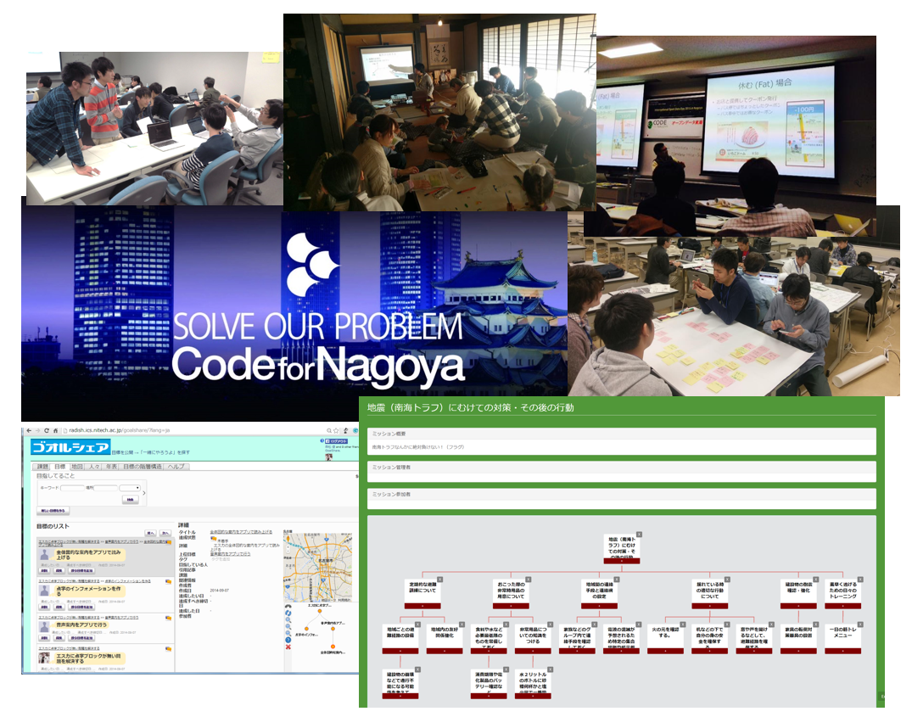
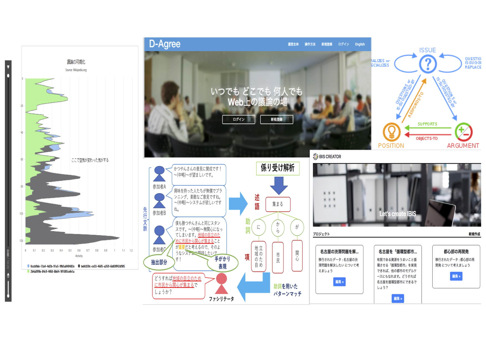
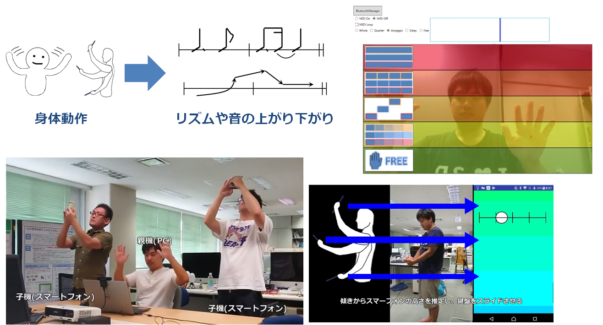

シビックテック活動の支援技術

情報技術を活用して地域社会を良くしようという活動のことを，シビックテックと呼びます．シビックテックでは，ITエンジニアと市民・行政など，多様な利害関係者によるコラボレーションが非常に重要です．白松研では，ハッカソンなどを通じてエンジニアと市民がコラボレーションするプロセスをLinked Open Data化して，協力者を集められるようなWebアプリケーションMissionForestを開発しています．
議論ファシリテーションの支援技術

AIが議論をファシリテートできないかという伊藤孝行研究室のプロジェクトに参加しています．これまでは，まずは人間のファシリテータの振る舞いを分析し，問い掛けの重要性を示す分析結果を得ました．これを踏まえ，ファシリテータの質問を自動生成する手法を開発しています．そのためには，AIに議論の内容とプロセスを理解させる必要があり，その理解モデルを研究しています．
身体動作による即興合奏の支援技術

演奏経験がない人々でも即興合奏に参加できるようになるシステムを開発しています．コード進行がわからなくても，手の上下動でメロディの動きや音のタイミングさえ指定すれば，体の動きとコード進行に合う音をシステムが鳴らしてくれます．ユーザの手の動きは，モーションセンサーカメラやスマートフォンセンサーを使って認識します．この技術は参加型音楽体験の可能性を拡げるだけでなく，初対面の人々の「アイスブレイク」にも使えるかもしれません．